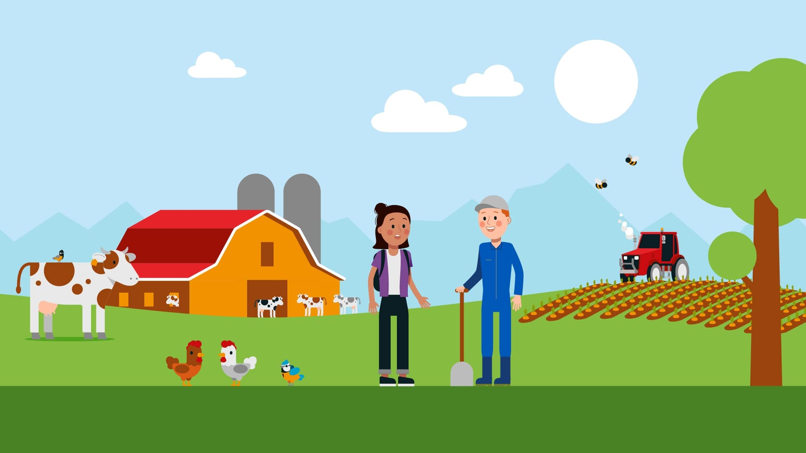
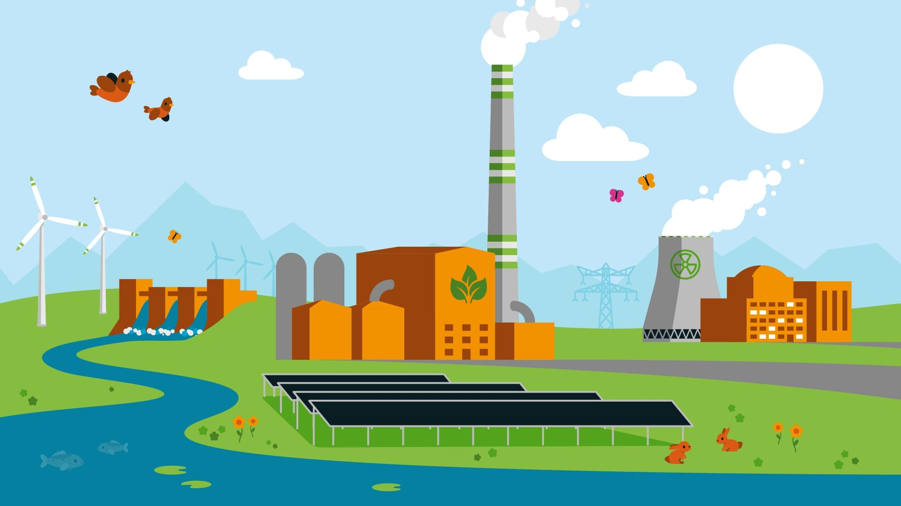
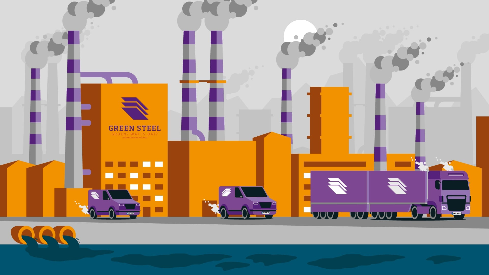
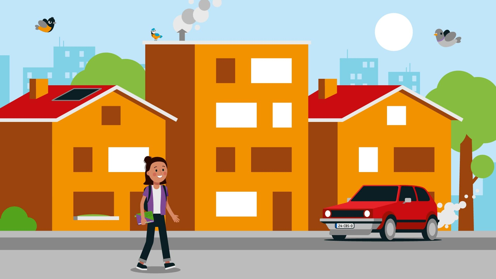
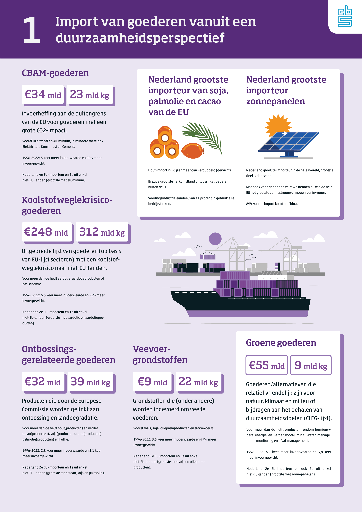
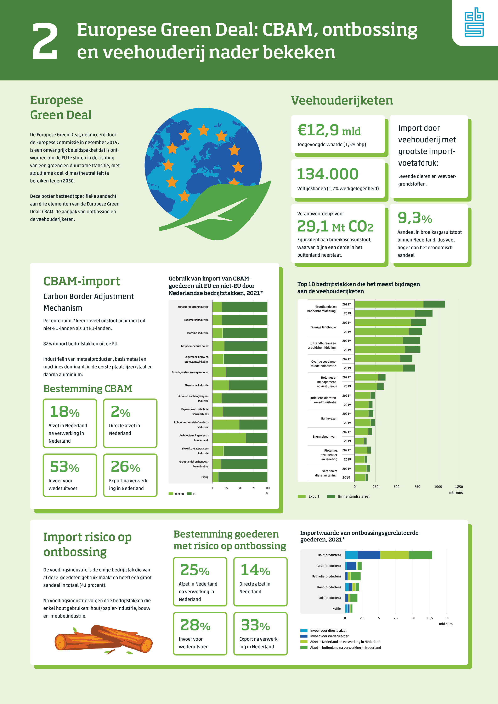
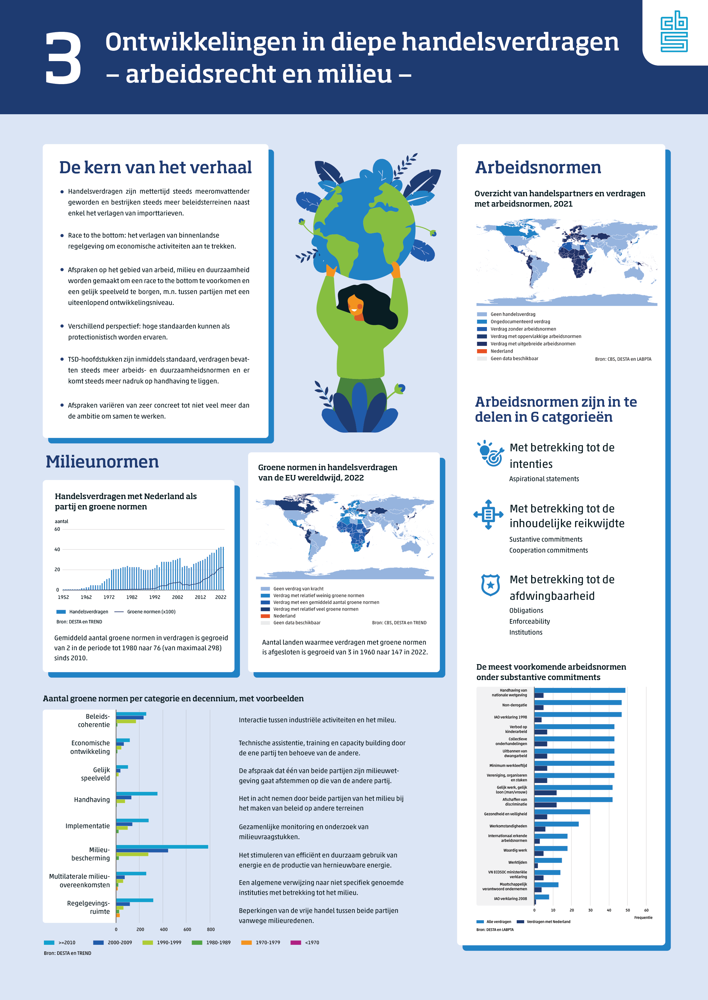
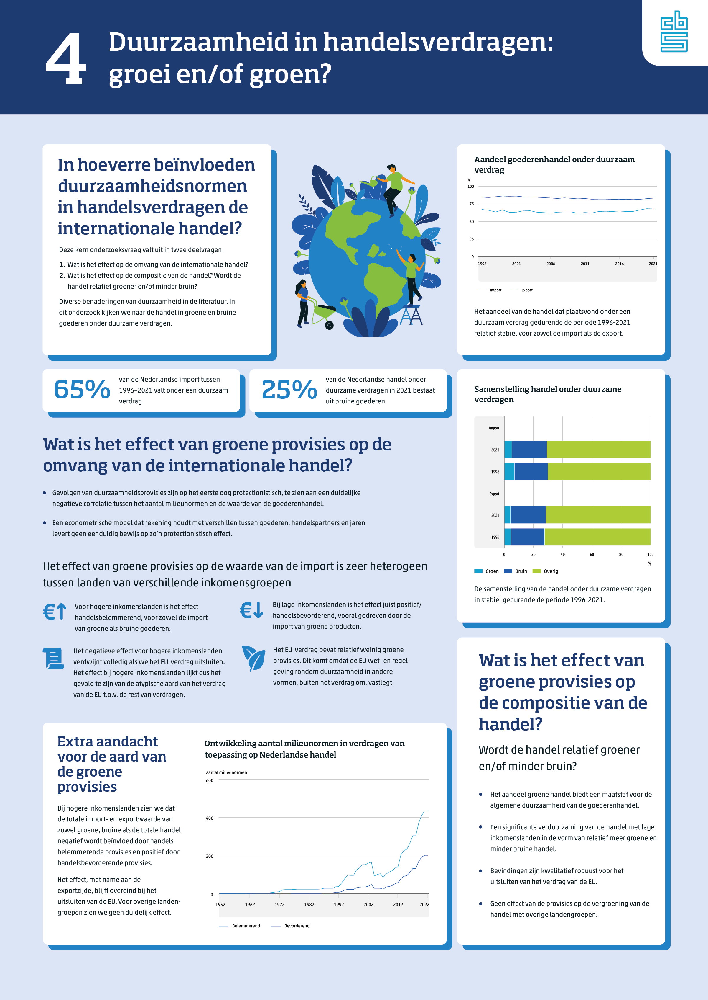
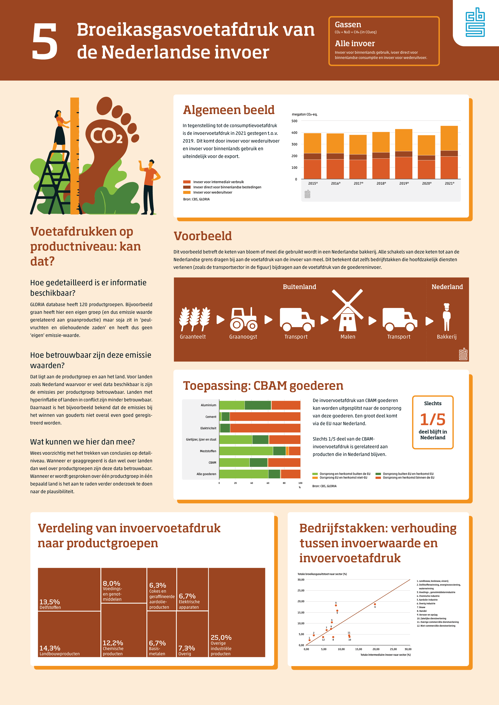
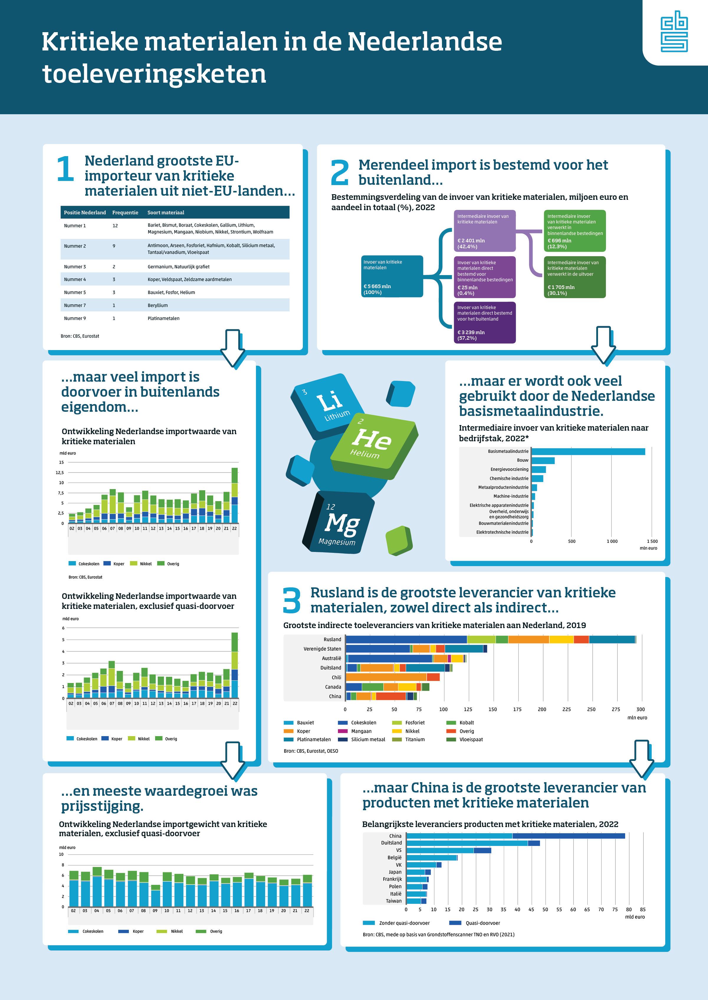

In my third year at CMD, I interned at Statistics Netherlands (CBS). CBS has a lot of data, but felt the need for a more engaging way to present it, especially when it comes to making complex information accessible for a general audience. Together with two other interns, I worked on a multimedia story about the European Green Deal. I was primarily responsible for the illustrations and animations of the story. During the internship, I also designed posters for a presentation at the Dutch Ministry of Foreign Affairs.
View the full story
Below is an interactive prototype of the multimedia story. Be mindful of the animation at the start, as it might
take a moment to load.
Concept and storyline
To explain the importance of the European Green Deal, we decided to
create a story that would show the potential consequences of climate
change. To do this, we wanted to look into the future, specifically to
2050, the deadline of the European Green Deal's goals. The story shows
two different futures: one that shows the impact of inaction while
another explores the benefits of achieving the goals of the European
Green Deal.
The story features a character named Sam, who
lives with her parents in a small town called Zonneberg. While she
looks through boxes in the attic, she discovers a mysterious diary
dated 2050. The diary appears to be written by her future self and
contains entries about the dire state of Zonneberg in 2050. Sam's
pessimism is confirmed, but after she learns about the European Green
Deal, new pages appear. These green pages show a more optimistic
future where the goals of the European Green Deal were achieved.
Users can explore Zonneberg with Sam, where each location
reveals new pages of the diary. Users can compare the two futures by
switching between the green and purple pages. The ending shows Sam
starting her journey towards a more sustainable future, writing her
progress in a diary, completing the circle.
Illustrations
The visual style of the story was an important aspect of the
project, as it needed to be engaging and accessible to a general
audience. We decided early on that the positive and negative pages
of the diary needed to be easily distinguishable. We decided to use
green for the future where the goals of the European Green Deal were
achieved and purple for the future where the goals were not
achieved. These colours, which are prominently present in the
illustrations and interactive elements of the pages, create a clear
contrast.
To fit CBS's identity, I decided to go for
simple and minimalistic illustrations, using the CBS colour palette.
To achieve the right look, I primarily used Adobe Illustrator. The
vector images also allowed for easy recolouring for the purple and
green pages. The images were designed to be easily understandable,
with clear differences for each possible future, visualising the
impact of climate change.




Posters for Foreign Affairs
Besides the multimedia story, I also designed posters for a presentation of the Internationalisation Monitor at the Dutch Ministry of Foreign Affairs. It was a great opportunity to create informative and visually appealing posters that effectively communicated the key messages of each chapter. The design process involved a lot of collaboration with the team at CBS to ensure that the posters effectively communicated the intended message. Each poster went through multiple iterations before the authors and I were all satisfied with the final design. The posters were then printed at A0 size and presented at the Ministry of Foreign Affairs, where they received positive feedback from the attendees. The posters remained at the Ministry on the host's request.





